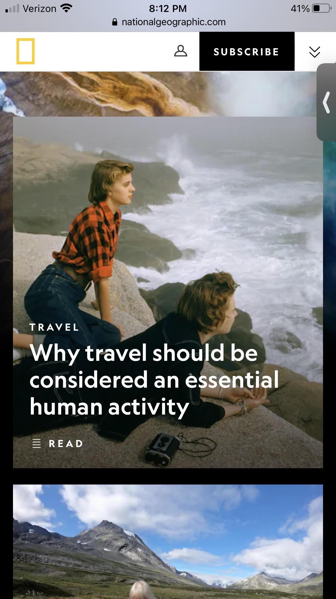
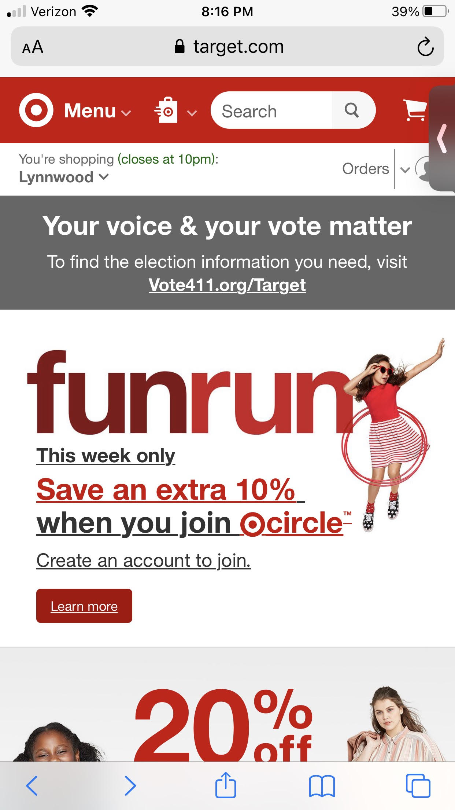
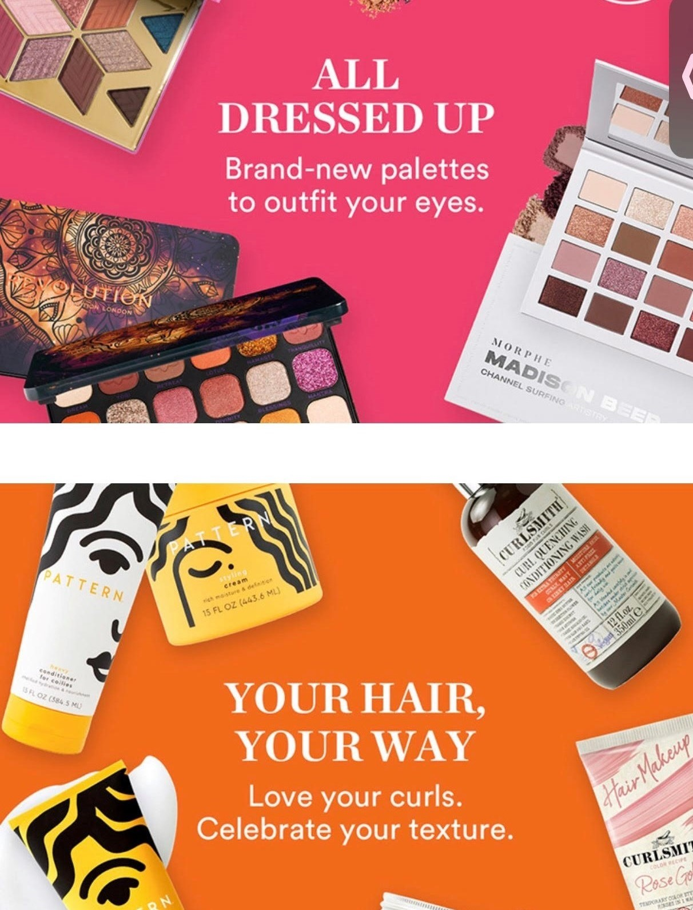

Rule of Thirds
National Geographic
nationalgeographic.com An article image on the National Geographic website exemplifies the Rule of Thirds by showing one person in the bottom third of the image and a second pereson in the left third of the image. By having the people shown where they are it makes the image both more interesting and draws the attention to the idea that travel should be considered an essential activity.
Contrast
Target
target.com The Target website is a great example of contrast with their iconic white and bright red. The white and red contrast has a AA rating that is best used for large or bold text. The Target programmers know that the red text needs to be larger in size and use black text for the smaller and main text.
Repitition
Ulta Beauty
ulta.com The Ulta Beauty website shows repitition by repeating the same font, font size, and layout. The cohesiveness of the design still allows for colors to differentiate categories.